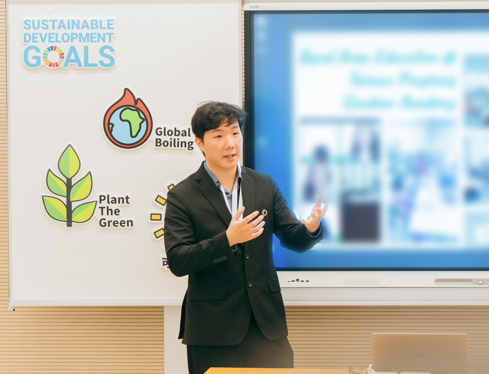

Youth Network is the sole UNFCCC-recognized host team for LCOY Taiwan. Edward returns to Taiwan mid-May to late June 2026 and welcomes meetings with universities, schools and sustainability offices.
The units best placed to turn Edward's international resources into real student outcomes.
A starting point for sister-school ties, Taiwan–US youth exchange, and overseas study and internships.
Drive student projects on the UN SDGs framework, producing outcomes fit for UN platforms.
Extend student USR projects onto the LCOY, COY and GCOY international stages.
Open cross-border youth leadership training, media exposure and CV value for student leaders.
Cross-disciplinary PBL — ideal for capstone projects, paper presentations and invention fairs.
Strategic dialogue on international collaboration, media visibility and grant applications.

Youth Network welcomes a face-to-face meeting or seminar to walk through the LCOY Taiwan model, how it integrates with your existing curriculum, and a concrete rollout plan for your campus.